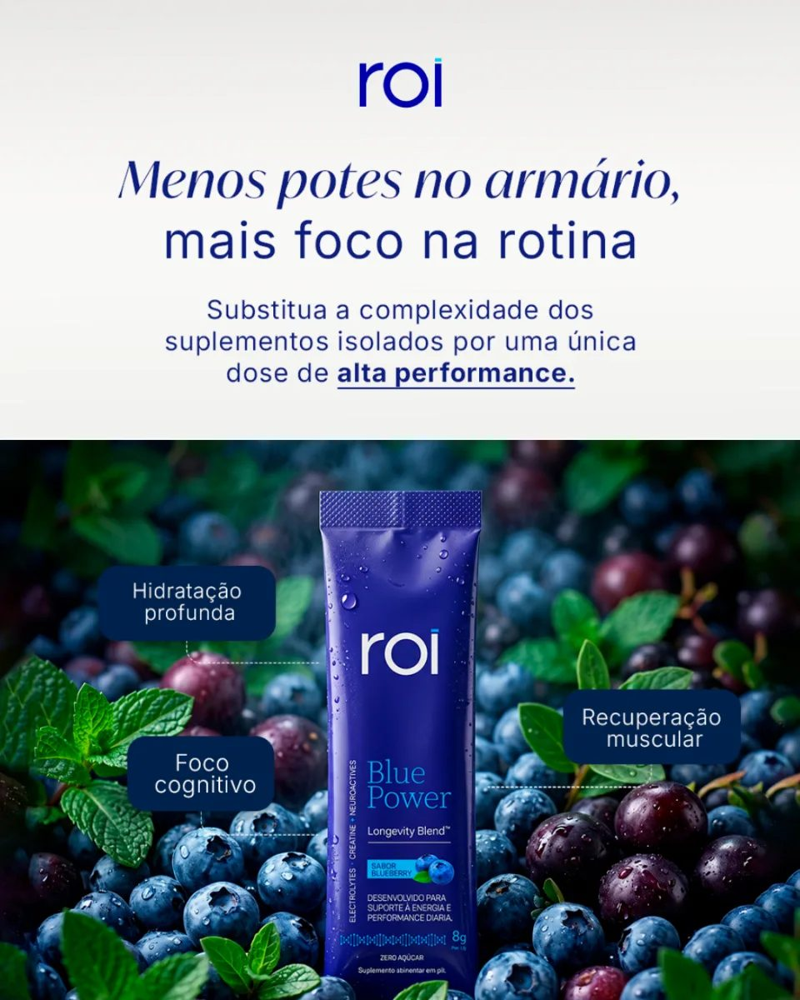
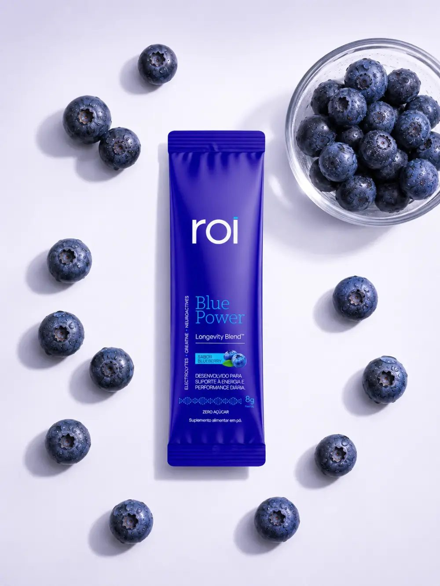
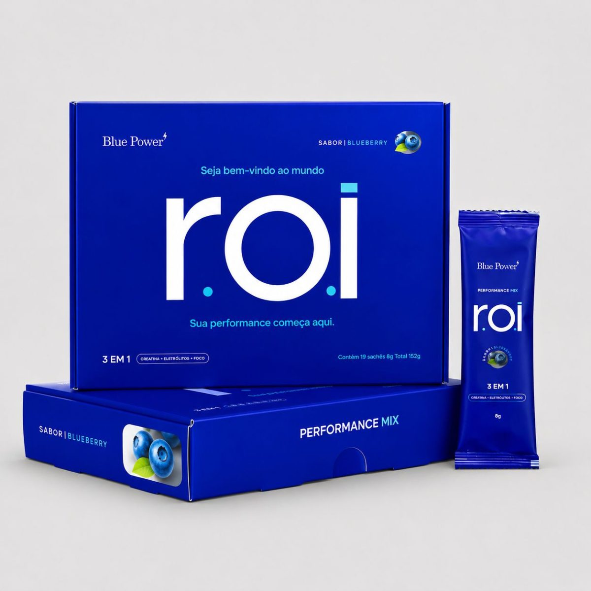

Hidratação e performance
O especialista em alta performance e longevidade Dr. Sandro Ferraz explica por que repor só mineral não resolve o cansaço, a dor de cabeça e a queda de foco no fim do dia.
Por Dr. Sandro Ferraz · Especialista em alta performance e longevidade · CRM 133573/SP
São Paulo · 03/09/2026 08h00 · Atualizado há 2 horas
Leve 2, pague 1
38 sticks · R$ 4,47 por dose
R$ 339,80
R$ 169,90
Envio em 24h · Compra segura
Sem eletrólito, a água que você bebe passa e sai. O médico de alta performance e longevidade explica o que os minerais fazem no corpo, e por que uma única dose diária com creatina e neuroativos resolve o que hoje exige três potes na bancada.
Água repõe água. Ela não repõe os minerais que saíram no suor, não devolve força ao músculo e não organiza a cabeça às três da tarde. A distinção parece pequena, mas é ela que explica por que tanta gente bebe dois litros por dia e continua arrastado.
O que uma rotina de alta demanda consome se separa em três eixos: os minerais que saem no suor, a força que o músculo perde sem substrato e a clareza mental que cai junto. Raramente o cansaço vem da falta de um único nutriente.
Os sinais mais comuns
Cansaço que não passa
Você dorme, acorda e a sensação de reserva continua.
Dor de cabeça no fim do dia
Aparece por volta das cinco, quase sempre no mesmo horário.
Boca seca mesmo bebendo água
Muito líquido no dia e pouca hidratação de verdade.
Queda de foco pós-almoço
A concentração cai e o café só empurra o problema para a frente.
Câimbra e peso nas pernas
Falta de sódio, potássio e magnésio depois do suor.
Treino sem rendimento
Você chega à noite sem força para repetir a carga da semana passada.
Motivo 01
Beber muito líquido não é o mesmo que hidratar. Sem os minerais que puxam a água para dentro da célula, o volume atravessa o corpo e sai. Sódio, potássio e magnésio governam o equilíbrio de fluidos e a contração muscular: são eles que dão destino à água.
Suor, treino, café e ar-condicionado tiram mineral junto com o líquido. Na prática, a diferença aparece no fim do dia: menos boca seca, menos aquela dor de cabeça de fim de tarde, e uma dose pela manhã em vez de lembrar de beber a cada hora.
Motivo 02
São três funções diferentes, e é por isso que repor só uma delas não resolve o dia inteiro.
Eixo 1 · eletrólitos
Levam a água para dentro da célula
Sódio, potássio e magnésio governam o equilíbrio de fluidos, a condução nervosa e a contração muscular. Sem eles a água atravessa o corpo e sai, e vem a câimbra, a boca seca e a dor de cabeça.
640mg por stick
Eixo 2 · creatina
Devolve energia ao músculo e ao cérebro
A creatina reabastece o sistema que o corpo usa para esforço curto e intenso, do treino à carga mental do fim do dia. Funciona por saturação: o efeito vem do uso diário, não de uma dose isolada.
3g por stick
Eixo 3 · neuroativos
Sustentam o foco sem estimulante
Tirosina, teanina, taurina, colina, inositol e vitaminas do complexo B atuam nos neurotransmissores ligados à atenção. Seguram a clareza mental da tarde sem cafeína, sem taquicardia e sem queda depois.
1.600mg por stick
Não é um isotônico. Não é mais um pote na bancada.
A questão nunca foi beber mais líquido. Era se o mineral, a creatina e o neuroativo estavam chegando na mesma dose, todos os dias, no horário em que o corpo precisa deles.
E é aqui que a conta muda: você não precisa mais montar esse conjunto por conta própria, medindo três produtos diferentes antes de sair de casa.
Pela primeira vez, a reposição completa cabe em um único sachê, todas as manhãs.
Tudo medido, tudo combinado, tudo em uma dose por dia.
E tem nome: ROI Blue Power.

38 sticks por R$ 169,90 · R$ 4,47 por dia de uso
Esqueça três potes, três colheres e a preocupação de acertar cada dose todos os dias.
Cada stick já vem lacrado e com as três doses medidas. É só abrir, misturar em 300 a 500 ml de água gelada e pronto.
A fórmula dissolve completamente, sem grumos ou resíduos, e o sabor blueberry torna o consumo muito mais agradável.
Cada caixa traz 19 sticks, um por dia. Cabe na mochila, na gaveta ou na mala e fica pronto em 8 segundos.
Mais praticidade para transformar a suplementação em rotina.

Rótulo · 8g por stick
A dose diária dos três eixos em um sachê
Eletrólitos
640mg
Sódio, potássio e magnésio para retenção de água na célula.
Creatina
3g
Dose cheia de monohidratada, a mesma usada nos estudos de saturação.
Neuroativos
1.600mg
Tirosina, teanina, taurina, colina, inositol e complexo B.
A dor e a solução
A dor · só água
Você bebe água, mas o cansaço continua
A solução · ROI Blue Power
640mg de eletrólitos dão destino à água
Motivo 03
A história da reposição diária é uma sequência de remendos. Primeiro veio a água, que dá volume sem mineral. Depois o isotônico de prateleira, que trouxe sódio junto com açúcar. Em seguida a era dos potes: creatina de um lado, eletrólito de outro, fórmula de foco em um terceiro, cada um com sua colher e seu preço.
O Blue Power é o passo seguinte: a ROI juntou os três eixos em uma única dose, em pó solúvel, sem açúcar e sem cafeína, e tirou da rotina tudo o que fazia as pessoas desistirem: a colher, a balança, o pote na bancada e o shaker sujo.
A evolução não foi adicionar mais um pote. Foi tirar todos eles do caminho.
O ROI Blue Power foi montado ao contrário do pote: uma dose, um stick, os três eixos na dose que funciona. Cada stick tem 3g de creatina monohidratada pura, 1.600mg de neuroativos e 640mg de eletrólitos, sem açúcar e sem cafeína.
Composição por massa
Tabela 1 · composição completa por stick
Motivo 04
Abra o stick
São 8g lacrados, na dose exata. Sem colher, sem balança e sem cálculo.
Dissolva na água
Em 300 a 500ml de água gelada. Dissolve por completo, sem grumos no fundo do copo.
Beba uma vez ao dia
De manhã ou antes do treino. A dose diária dos três eixos já está ali.
Em um dia comum, o nível de hidratação, força e foco só desce: um pouco depois do almoço, mais um tanto no fim da tarde, e o treino das sete acontece com o tanque na reserva. A reposição diária existe para achatar essa curva.
Um dia inteiro, das 6h às 22h
Rotina comum contra rotina com um stick pela manhã
7h
O stick entra antes de o dia começar. Uma dose, 8 segundos.
14h
Onde a rotina comum despenca, os neuroativos seguram o foco sem cafeína.
19h
Treino com os 3g de creatina do dia já contabilizados.
22h
Sem cafeína no caminho, o dia termina sem o efeito rebote do energético.
Motivo 05
Comparado às categorias que ocupam a bancada, o stick faz o trabalho de três em uma única bebida.
Tabela 2 · comparação de categorias
Já tomo creatina. Vou tomar dose dupla?
Cada stick tem 3g de creatina monohidratada pura, a dose diária de manutenção. O Blue Power substitui o pote, não soma a ele.
Vai me deixar acelerado?
Zero cafeína. O foco vem de tirosina, teanina, taurina, colina, inositol e vitaminas do complexo B, sem taquicardia e sem queda depois.
Preciso treinar para fazer sentido?
Não. Hidratação, força e clareza mental servem para o dia de treino e para o dia de reunião. Uma dose por dia, no horário que couber.
E o gosto?
Blueberry, zero açúcar. Feito para água bem gelada, que é onde ele fica melhor.
Depoimentos individuais. Resultados variam de pessoa para pessoa.
Pedindo hoje, por esta página, o ROI Blue Power sai por

R$ 169,90
R$ 339,80
Duas caixas pelo preço de uma
Blue Power · sabor blueberry · 19 sticks por caixa
Seu desconto expira em {{ countdown }}
Lote promocional em andamento
Promoção compre 1 e leve 2
Duas caixas, 38 sticks
Um mês e meio de reposição completa em casa
R$ 339,80
R$ 169,90
R$ 4,47por dose diária
Compra 100% segura · quando a promoção encerra, o kit volta ao preço de duas caixas